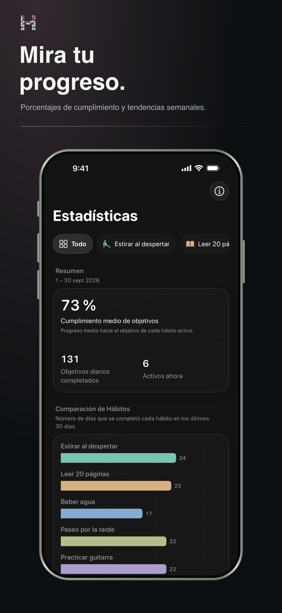

Patrones, no presión
Entiende qué te ayuda a volver.
Consulta rachas, tasas de cumplimiento y patrones a largo plazo sin convertir tu rutina en una hoja de cálculo.
- Racha actual y mejor racha
- Tendencias y distribución de cumplimiento
- Contexto semanal, mensual y anual